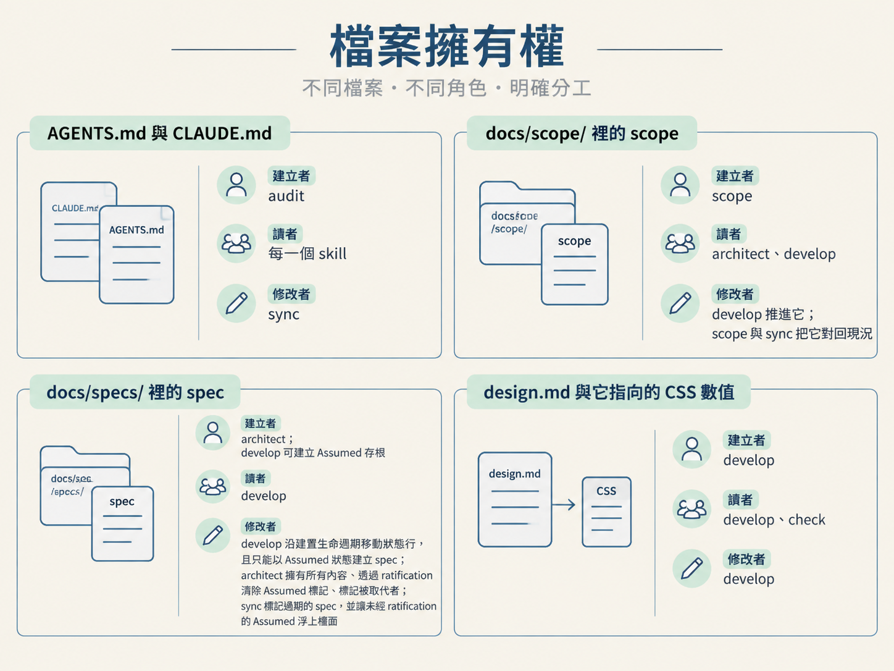

固定擁有權，就是替四種檔案指定建立者、讀者與修改者。各檔案的權限，以及 spec 的狀態值與狀態行規則如下。
| 檔案 | 建立者 | 讀者 | 修改者 |
|---|---|---|---|
AGENTS.md 與它的 CLAUDE.md 指標 |
audit | 每一個 skill | sync |
docs/scope/ 裡的 scope |
scope | architect、develop | develop 推進它；scope 與 sync 把它對回現況 |
docs/specs/ 裡的 spec |
architect；develop 可建立 Assumed 存根 |
develop | develop 沿建置生命週期移動狀態行，且只能以 Assumed 狀態建立 spec；architect 擁有所有內容、透過 ratification 清除 Assumed 標記、標記被取代者；sync 標記過期的 spec，並讓未經 ratification 的 Assumed 浮上檯面 |
design.md 與它指向的 CSS 數值 |
develop | develop、check | develop |

spec 共有五種狀態，用來記錄一份 spec 從決定、建置到被取代的生命週期。
| 狀態 | 意義 |
|---|---|
Proposed |
決定已經完成，但還沒開始建置。新寫下的 spec 從這個狀態開始；如果要補記已經上線的內容，就直接以 Accepted 建立。 |
In Progress |
建置開始時，develop 會把狀態行移到這裡。 |
Accepted |
功能建置、驗證完成後，develop 會把狀態行移到這裡。 |
Assumed |
沒先做出真正的決定就開始建置時，由 develop 建立的假設存根。內容記錄所依據的假設、授權者，以及碰到的程式碼。這是 develop 唯一能建立的 spec，而且一定要是這個狀態。 |
Superseded |
決定被真正推翻時，由 architect 撰寫新的 spec，並將舊 spec 標為此狀態，再附上指向替代者的指標。 |
architect 能撰寫 spec 內容，也只有 architect 能清除 Assumed 標記。develop 能沿建置生命週期移動狀態行；develop 唯一能建立的新 spec，是 Assumed 存根。spec 的狀態行格式如下：
**Status**: Proposed建置開始後，develop 把同一行改成 **Status**: In Progress；功能建置、驗證完成後，再改成 **Status**: Accepted。spec 的其他內容，develop 不會去動。
spec 的內容和狀態行分屬不同角色：architect 撰寫內容、清除
Assumed標記；develop 移動狀態行，而且只能建立Assumed存根。其他檔案的建立、讀取、修改權，就看檔案擁有權表。